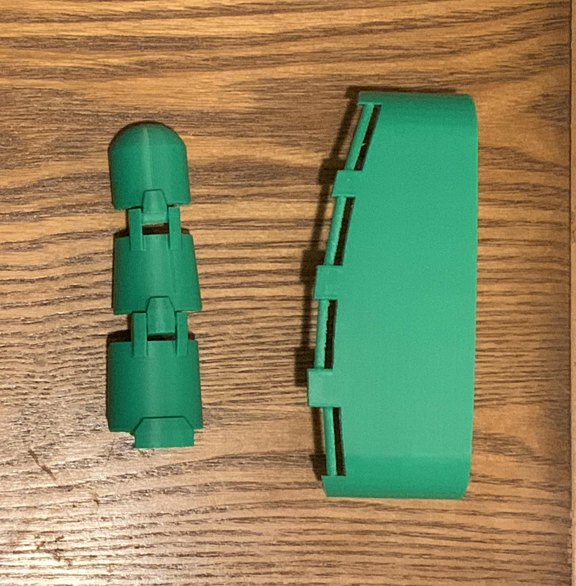
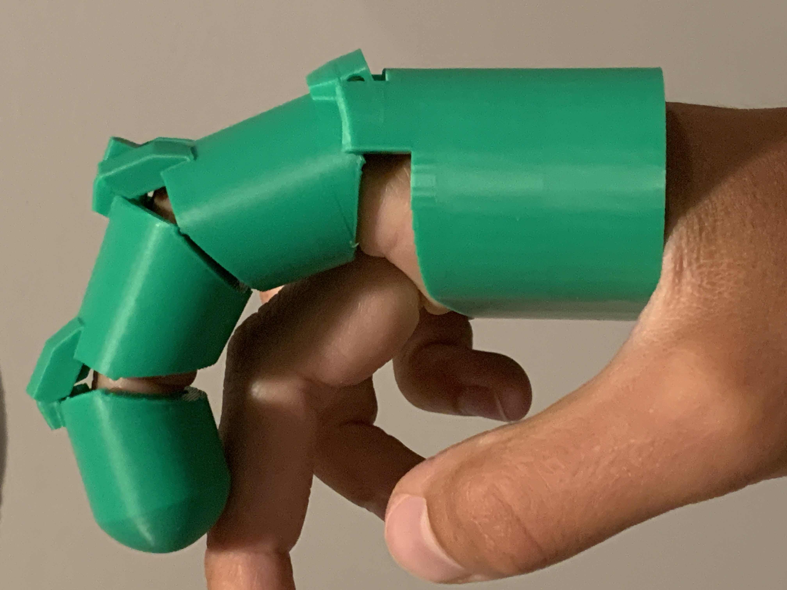
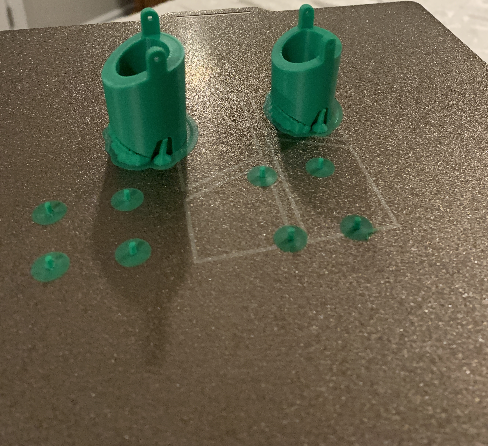
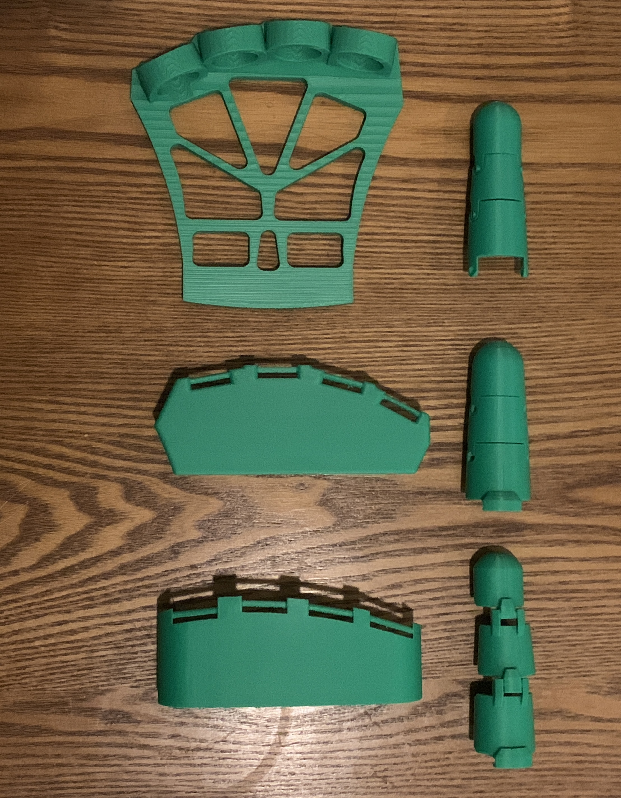

Independent Engineering Project
Exoskeleton Hand
Development of a wearable hand exoskeleton exploring mechanical design, rapid prototyping, manufacturability, and the engineering challenges involved in assistive technology.

Independent Engineering Project
SolidWorks · FDM 3D Printing
Bambu Lab P1S · PLA
Mechanical Design · Assistive Technology
Overview
Project Overview
This independent project focuses on the mechanical development of a wearable hand exoskeleton designed to support future active assistance of finger movement.
I am developing the system through an iterative CAD and prototyping process, using SolidWorks and FDM 3D printing to evaluate geometry, fit, mechanical interfaces, and manufacturability.
The current work establishes the mechanical foundation of the device. Future development will build on this structure through actuation, sensing, controls, and additional functional testing.
Engineering Challenge
Designing Around the Human Hand
A hand exoskeleton must balance mechanical function with the geometry and movement of the human hand. Components need to provide useful motion while remaining lightweight, wearable, structurally sound, and manufacturable.
The project therefore required consideration of finger and palm geometry, joint motion, clearances, mechanical interfaces, structural integrity, and the limitations of additive manufacturing.
Rather than attempting to finalize the design in CAD alone, I used physical prototypes to identify problems and guide subsequent revisions.
Current Prototype
From CAD to Wearable Assembly
The current prototype integrates the palm, finger structures, and mechanical interfaces into a wearable assembly. The design provides a mechanical platform for future actuation and active assistance.


Design Process
An Iterative Approach to Mechanical Development
I approached the project as an iterative engineering process. Research and concept development established the initial architecture, while CAD and physical prototyping were used to progressively refine the design.
Research & Concept Development
Initial research focused on hand anatomy, finger movement, and existing assistive and exoskeleton devices. This work informed the overall mechanical architecture and helped identify the constraints that needed to be addressed during development.

CAD Development
I translated the initial concepts into SolidWorks models, developing the palm, finger structures, joints, and mechanical interfaces. CAD allowed geometry, alignment, clearances, and component relationships to be evaluated before manufacturing.
Rapid Prototyping
FDM 3D printing was used to rapidly produce physical prototypes. These prototypes provided feedback on fit, assembly, clearances, mechanical interfaces, and manufacturability that could not be fully evaluated in CAD.
Evaluation & Refinement
Observations from each prototype were incorporated into subsequent CAD revisions. This iterative process allowed mechanical and manufacturing issues to be identified early and addressed before progressing toward a more complete design.


Engineering Decisions
Refining the Design Through Prototyping
Physical prototypes revealed several issues that were not apparent in the initial CAD models. These observations directly informed revisions to the mechanical interfaces, geometry, clearances, and component positioning.
Joint & Pin Interfaces
The finger joint architecture and pin interfaces were revised to improve mechanical function and manufacturability. Changes to the hinge geometry, pin dimensions, and bore geometry helped create more robust interfaces for continued prototyping.
Palm Geometry & Clearance
A dimensional relationship within the palm assembly resulted in insufficient internal clearance. The geometry was revised to better accommodate the intended hand dimensions and maintain appropriate space between interacting components.
Finger & Component Geometry
Finger thickness, beam positioning, and other component dimensions were refined as prototypes exposed opportunities to improve fit, clearance, and structural efficiency.
Design Tradeoffs
Each revision required balancing structural material, component size, clearances, printability, assembly, and the eventual requirements of a wearable device.
Prototyping & Manufacturing
Designing for FDM Manufacturing
The components were manufactured using a Bambu Lab P1S FDM 3D printer with PLA filament. Additive manufacturing allowed designs to move quickly from CAD models to physical assemblies, making it possible to test and revise the design through repeated iterations.
Print orientation, support requirements, feature size, clearances, and material distribution all influenced the final component geometry. Manufacturing feedback therefore became part of the design process rather than a separate step after CAD development.

Current Status
Establishing the Mechanical Foundation
The project has progressed from initial concepts through multiple CAD and physical prototype iterations, establishing a functional mechanical assembly and a repeatable process for identifying and resolving design issues.
Current development remains focused on the mechanical system. Functional testing of the assembled mechanism, including range of motion, alignment, structural performance, and controlled finger movement, will be used to guide the next design iterations.

Future Development
From Mechanical Prototype to Active Assistance
The current prototype establishes the mechanical foundation for continued development toward an actively powered hand exoskeleton.
Mechanical Validation
Future testing will evaluate range of motion, structural performance, durability, alignment, and mechanical consistency under representative conditions.
Actuation & Controls
The next major development stage will involve integrating actuators, transmission mechanisms, and controls capable of producing controlled finger assistance.
Sensing & User Interaction
Future iterations could incorporate sensors to measure hand position or detect user intent, allowing assistance to be coordinated with the user's intended movement.
Human Factors
Continued development will also address comfort, fit, weight, adjustability, usability, and the interaction between the device and the user's hand.